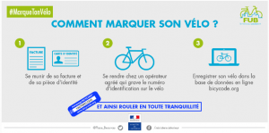

Cycliste et bien équipé, des parcours à vélo à Hoenheim

Au bas de la page, téléchargez les plans de parcours à vélo à Hoenheim. Voici également quelques recommandations et conseils pour vous rendre au travail ou parcourir les routes de campagne en toute sécurité :
Des sapins par centaines

Dans le prolongement d’une politique en faveur de l’environnement et pour une première à Hoenheim, passé Noël, les sapins auparavant brûlés ou jetés avec les ordures ménagères, ont été ramassés en vue d’être transformés en broyât.
Êtes-vous de bon poêle ?

Une enveloppe financière jusqu’à 1600 euros pour vous aider à changer votre appareil de chauffage.
Des masques aux couleurs de Noël

A l’approche des semaines de festivité autour de Noël et de la nouvelle année, le Maire Vincent DEBES a distribué des masques aux commerçants de proximité et aux passants.